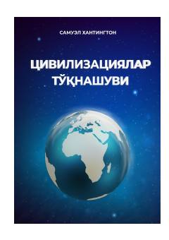

STSovuq urushdan keyingi davrda global siyosat va sivilizatsiyalar to'qnashuvini tahlil qiluvchi mashhur asar.
Ushbu kitobda Sovuq urushdan keyingi davrda global siyosat va xalqaro munosabatlar madaniy hamda sivilizatsion chegaralar bo'ylab qanday shakllanayotgani tahlil qilinadi. Muallif dunyo sivilizatsiyalarining o'zaro ta'siri, kelajakdagi ehtimoliy to'qnashuvlar va dunyo tartibining o'zgarish tendentsiyalarini yoritib beradi.